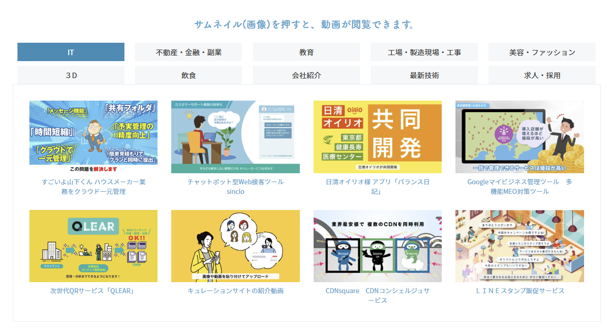
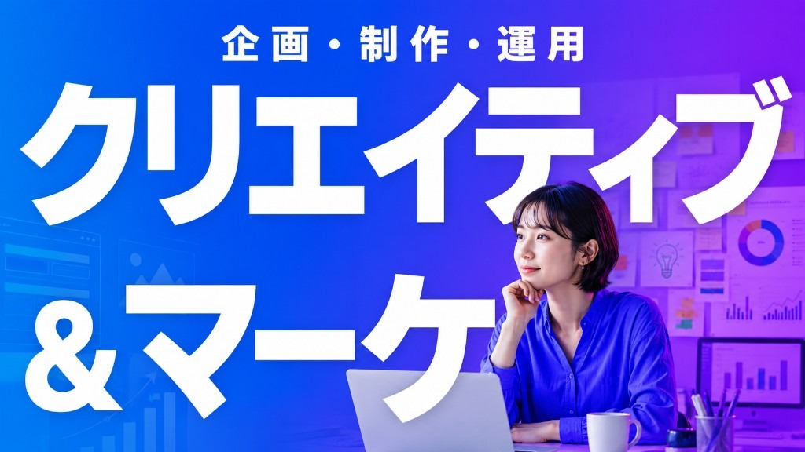
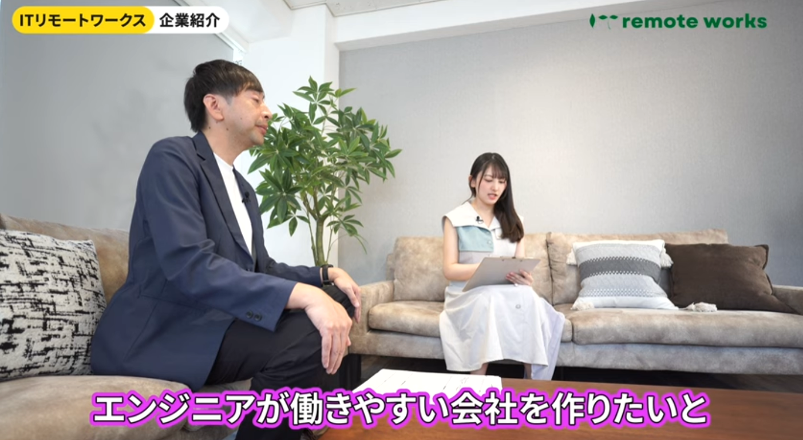
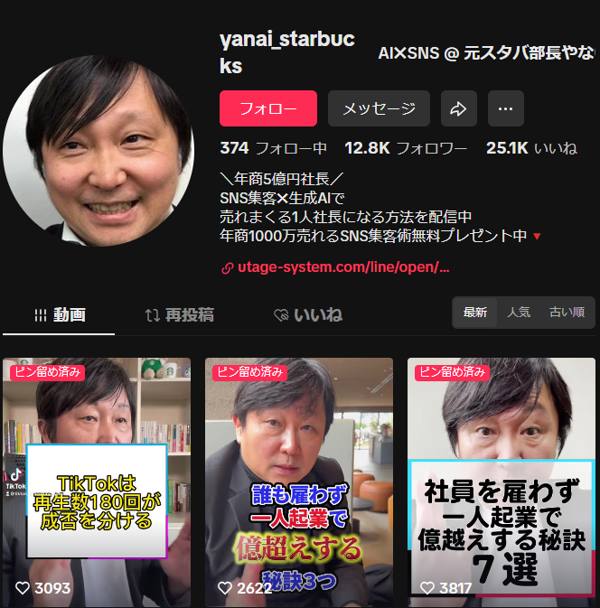
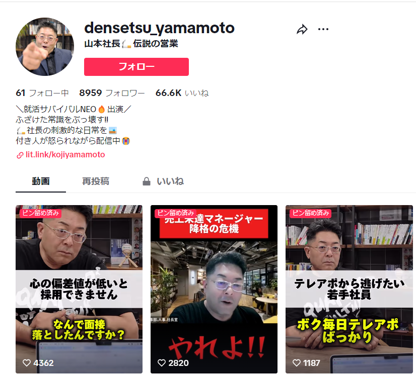
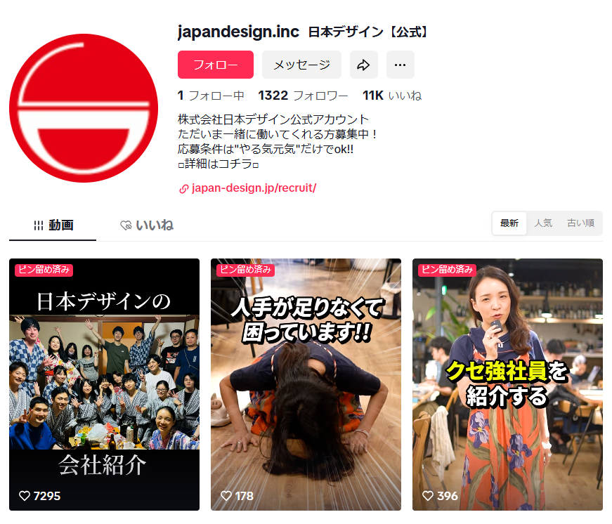
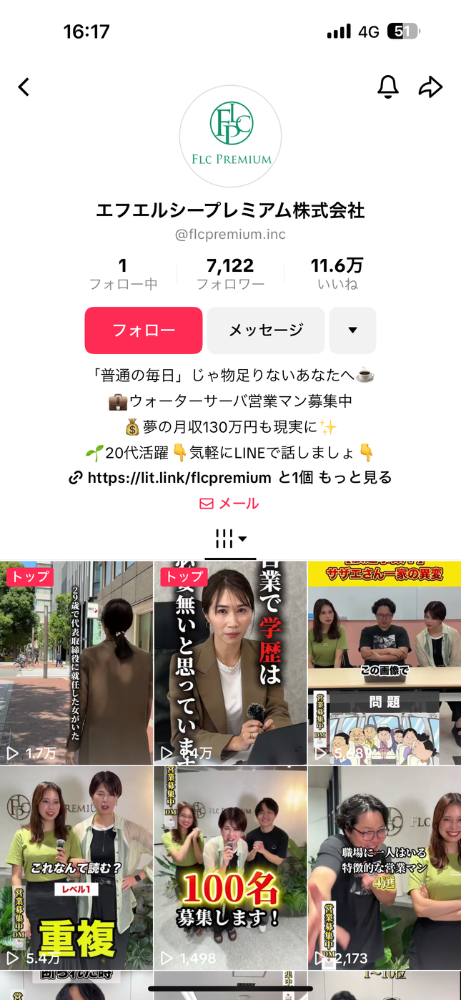
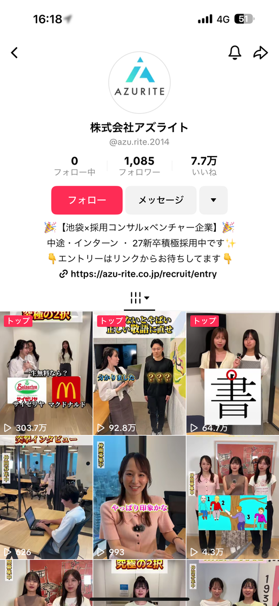
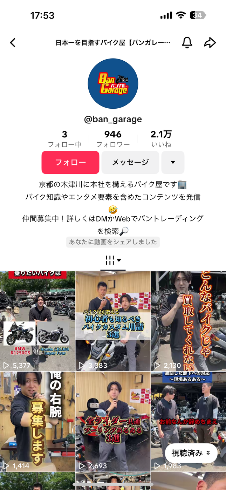

アニメーション動画
説明特化型アニメ。IT・教育・採用など350社以上の制作実績。
CREATIVE & MARKETING
アニメ・実写・SNS動画など、動画制作からマーケティングまでを横断。

SERVICES
アニメーション・実写・SNS動画の3カテゴリで、採用・集客・説明まで幅広く対応します。

説明特化型アニメ。IT・教育・採用など350社以上の制作実績。

社長メッセージ・座談会・職場体験など、リアルな現場を撮影。

TikTok・Instagram・YouTube向け。採用・ブランディングの成果創出。
WORKS
アニメ・実写・SNS動画のカテゴリ別に、代表事例を掲載しています。
社長メッセージ・座談会・職場体験など、撮影による採用・ブランディング動画。一色動画チャンネルの2番目以降の最新作も当社制作です。
TikTok・Instagram・YouTubeでの採用・集客事例。ファンステップ採用LPでも詳しく掲載しています。
CASE 01

CASE 02

CASE 03

CASE 04

CASE 05

CASE 06
説明特化型アニメーション。IT・教育・採用など全カテゴリの実績は公式LP、追加作品はYouTubeチャンネルでもご覧いただけます。

CONTACT
サービスに関するご相談は、お気軽にお問い合わせください。